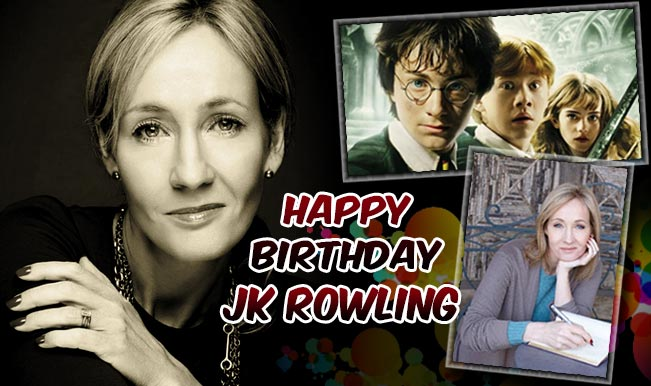

Voldemor's daughter actually pretends to be her "uncles helper and caretacker." But is stopped when Cedric diggorries father(the "uncle".) confesses that he never had a brother or sister in his lifetime. Then, Voldemort's daughter goes back in time with a stolen "time turner" to stop voldemort from attempting to kill Harry Potter in the First book. But luckilly, Harry Potter can still speak parseltoungh and poses for voldemort with a potion cunducted and created by Hermione and save history because of it.

But it is'nt just any pheonix feather, it's actually Dumbledore's pheonix's feather. Lord Voldemort got the other one.(Dumbledore's pheonix only gave Olivander 2 feathers.)Because of this, Harry Potter's wand "recongnises" Voldemort's wand and can use a bit of his OWN magic against him.
In the 3d book, Harry get's attacked by a Dementor during a quidditch match against Huffulpuf, wich leaves him looking for a defence. Luckily, Lupin knowes the patronus charm! After many failed attempts, during a quidditch match, he produces a full-fleged stag-patronus, deafeating the "Dementor." Later, after a bunch of book drama, Harry produces a patronus against a dozen Dementors, deafeats them, and saves Sirius's soul.
"Proffesor Lupin" was bitten by Fenrir Greyback when Lupin was only 4 years old. To protect his secret, Dumbledor planted the Womping Willow, with a secret entrance to the "shreiking shack" under it's roots. Every month, he would go to undertake his horrifying transformation under the influence of a potion cunducted by Snape that let's him keep his humanitity.Snape then reveals the truth aboute Lupin, and he resingns. Lupin then joins the order of the pheonix, and well, yeah.
Yep, it's true. When Harry blows out the candles of his eleventh birthday, it is July 31! And the same day mrs JK rowling blew out her own! ;) OMG!! that is probably the coolest/weirdest thing i've ever seen (or at least in 2018)! ;P